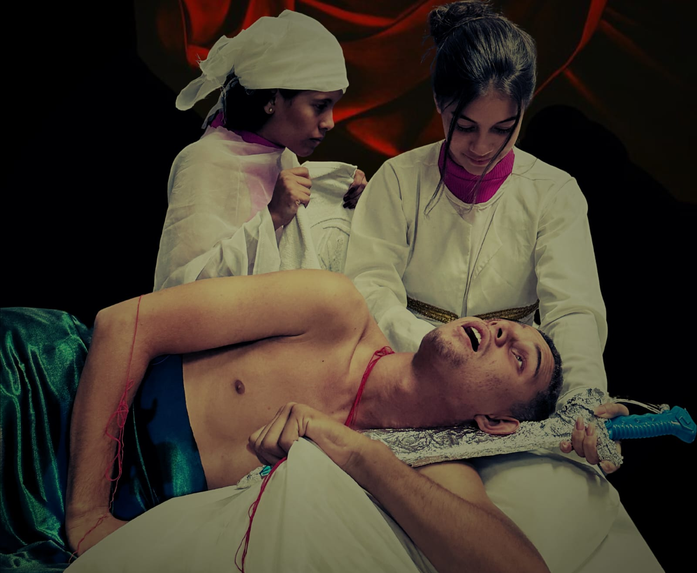
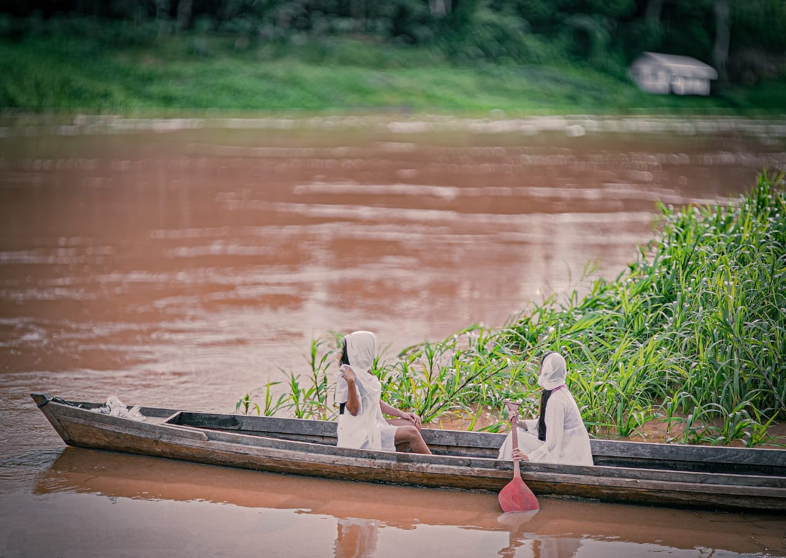
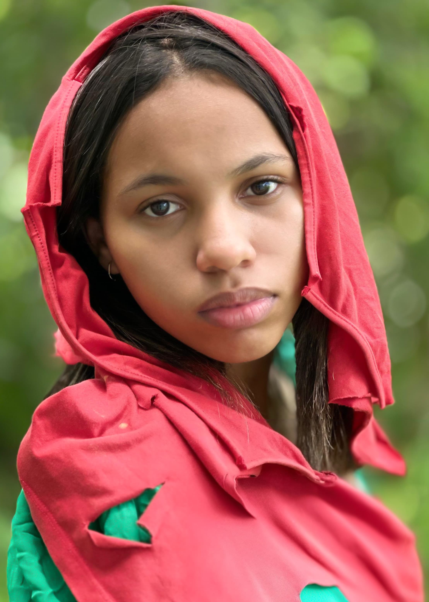

JUDITE DECAPITANDO HOLOFERNES

Reconstrução 1
Judite e Holofernes" é uma obra de Caravaggio (1599), baseada no Livro de Judite do Antigo Testamento. A pintura mostra Judite decapitando o general Holofernes para salvar seu povo durante o cerco de Betúlia.
SEPULTAMENTO DE CRISTO

Reconstrução 2

(Caravaggio, 1571-1610) é uma obra barroca que destaca o tenebrismo, com contraste dramático entre luz e sombra. Caravaggio retrata o corpo de Cristo de forma crua e realista, abandonando a idealização religiosa. As figuras ao redor expressam luto com gestos intensos e olhares humanos, criando profundidade e forte impacto emocional.
O ESQUIFE
Reconstrução 2
Pierre Auguste Reinor (1841-1919) "o esquife" (La Yole) é uma obra-prima do Impressionismo. Pintada em 1875, esta obra representa uma cena campestre em que duas mulheres podem ser vistas em em um pequeno barco no rio.
GAROTA AFEGÃ

Reconstrução 2
É um retrato fotográfico de 1984 de Sharbat Gula (nascida em 1972), Também conhecida como Sharbat Bibi, tirada pelo fotojornalista Steve McCurry. A imagem apareceu na capa de junho de 1985 da National Geographic. A